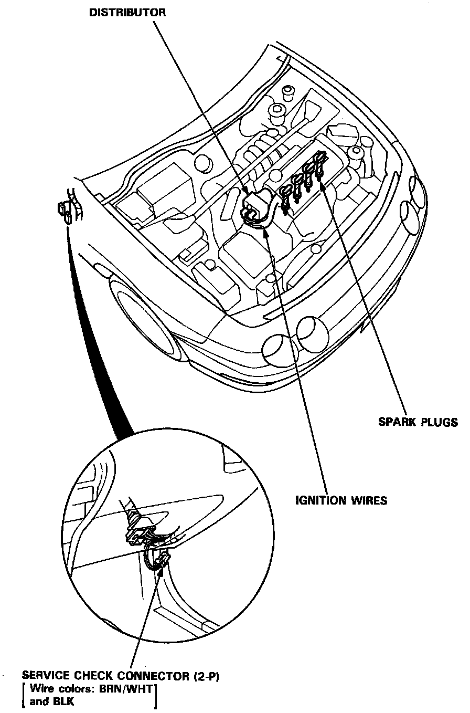

Operation CHARM
: Car repair manuals for everyone.
Home
>>
Acura
>>
1993
>>
Integra L4-1678cc 1.7L DOHC (VTEC) FI
>>
Repair and Diagnosis
>>
Maintenance
>>
Tune-up and Engine Performance Checks
>>
Distributor
>>
Locations
Distributor: Locations
Ignition System Component Locations:

The distributor is located at the rear of the engine, on the passenger side of the engine compartment.